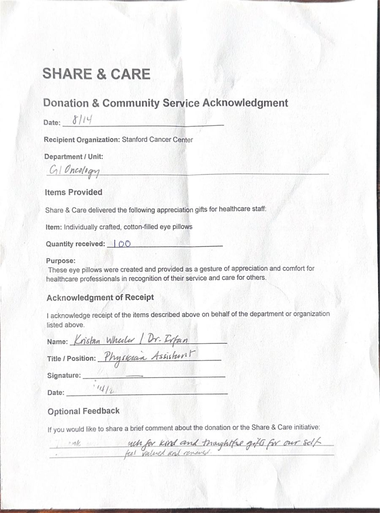
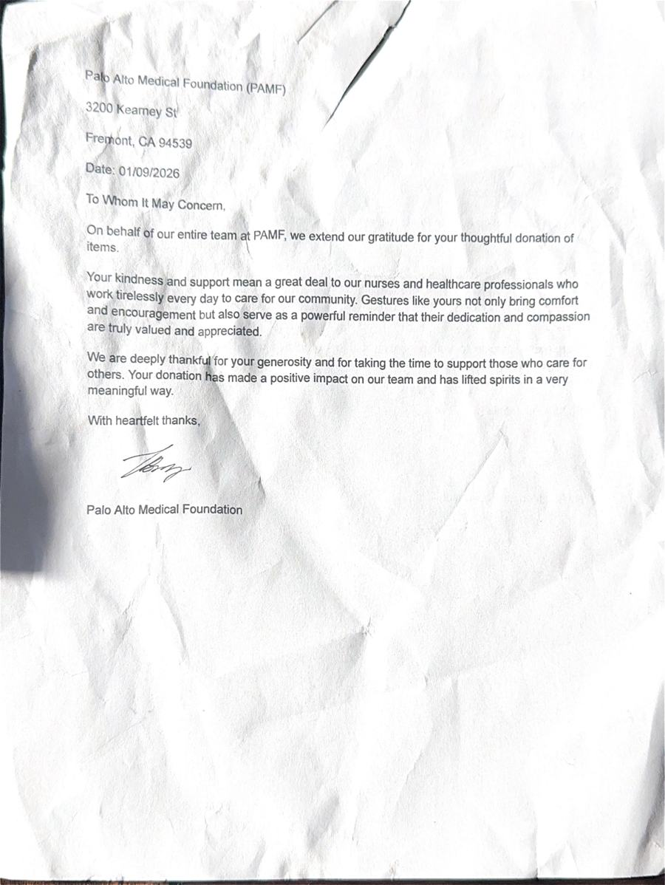
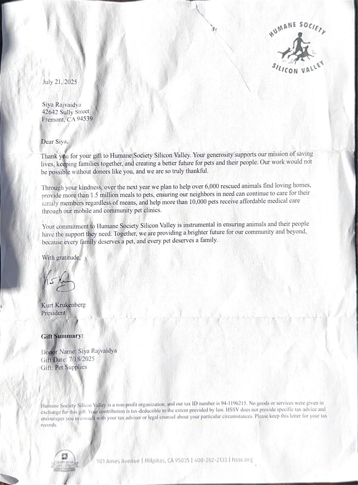

In their words.
Notes from the care teams and shelters we serve, every quote below is from a signed letter or acknowledgment on file.
"Thank you so much for the kind and thoughtful gifts. We feel valued and renewed."
Kristan Wheeler, Physician Assistant, Stanford Cancer Center
Handwritten feedback on the signed acknowledgment form, August 14, 2026.
"Thank you again for your generous donation of 75 eye pillows to the Palo Alto Medical Foundation! We appreciate your continued support of our organization and our community."
Christopher Burnham, Department Administrator, Sutter Health
"Thank you for the beautiful eye pillows you donated to our Mountain View Dermatology department. Our team was surprised and delighted to receive this thoughtful gift!"
Karol Parrish, Operations Manager, Palo Alto Medical Foundation
"Thank you for keeping us in mind and donating 75 comfort pillows to our staff. Your thoughtfulness and creativity bring positivity to our work place."
David Quach, Office Manager, PAMF Los Gatos Center
"Your kindness and support mean a great deal to our staff, especially our nurses and healthcare professionals who work tirelessly every day to care for our community. Your donation has made a positive impact on our team and has lifted spirits in a very meaningful way."
Sandy Amos, Washington Infusion Center
"Through your donation of pet supplies, you ensure local families can keep their beloved companions. Every day, we witness the profound impact your support has on the lives of both pets and their families."
Humane Society Silicon Valley
The letters themselves.
Every quote above comes from a signed letter we keep on file. Here they are.

Stanford Cancer Center, August 2026

Palo Alto Medical Foundation, January 2026

PAMF Los Gatos Center, February 2026

Washington Infusion Center, October 2026

Humane Society Silicon Valley, August 2025